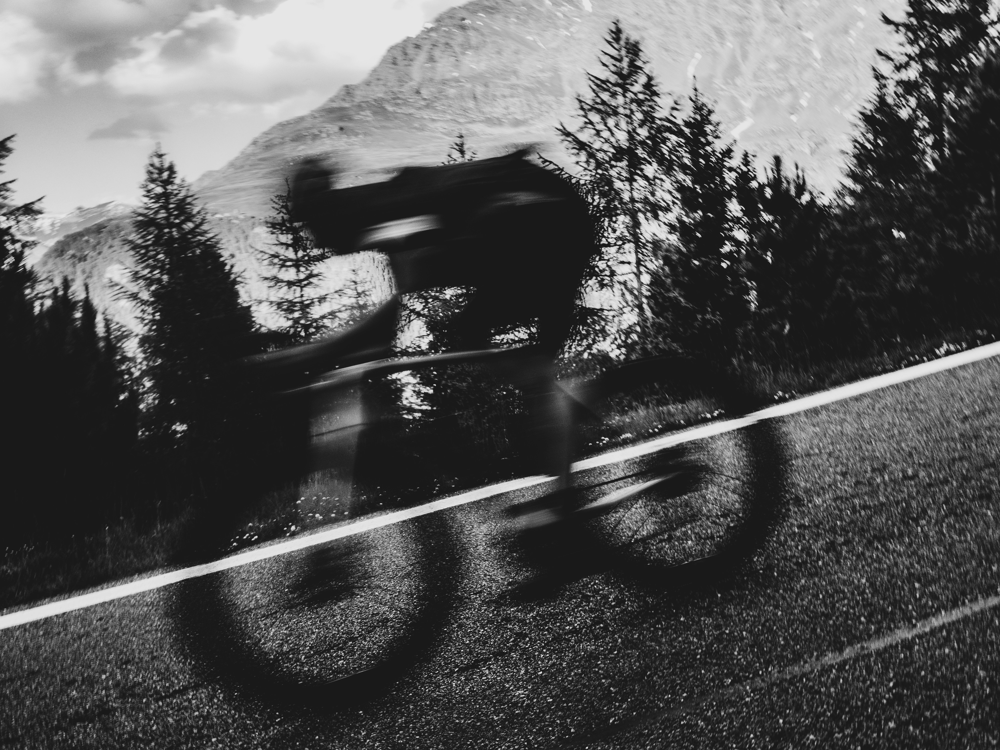
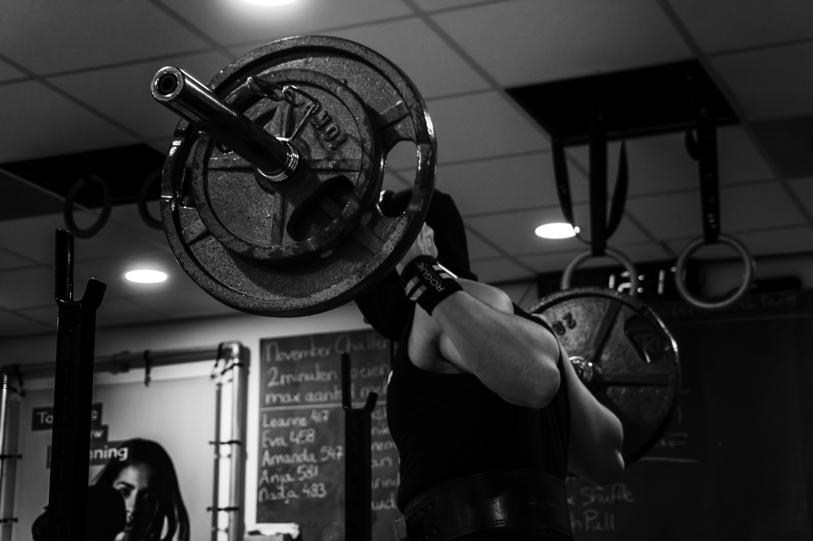

Training Science
Evidence-based
training insights.
Studies, methods, and practical takeaways — curated for athletes who train with intention.

Polarized vs. Threshold Training: What the Research Says
A 2024 meta-analysis in Sports Medicine confirmed that polarized training (80% easy / 20% hard) outperforms threshold-heavy approaches for VO2max gains in trained runners. The key finding: spending more time at low intensity paradoxically produces faster race times.

Progressive Overload: Why 2–5% Weekly Increases Still Win
Gradual progressive overload consistently outperforms aggressive loading. A 2024 study tracked 200+ lifters over 16 weeks — the conservative group gained 23% more strength with 60% fewer injuries.
Sleep is the #1 Performance Enhancer — Here's the Data
Stanford research: extending sleep to 8–10 hours improved sprint times by 5%, free throw accuracy by 9%, and reaction time by 15%. One night of poor sleep reduces power output by 10–15%.

FTP Testing: Ramp Test vs. 20-Minute Protocol
Ramp tests overestimate FTP by 5–8% in endurance-trained cyclists, leading to training zones that are too hard. For long-event racers, the 20-minute protocol gives more accurate zones.

The Critical Role of Running Cadence in Injury Prevention
Increasing cadence by 5–10% significantly reduces impact forces on the knee and hip. 170–180 spm is associated with 30% lower injury rates compared to overstriders at 150–160 spm.

Carb Periodization: Fuel the Work, Not the Day
Strategic carb timing around training — not constant high-carb diets — improves both performance and body composition. Athletes who periodized carbs lost 2.1kg more fat while maintaining power output.

Compound vs. Isolation: The Efficiency Debate Settled
A review of 47 studies: compound movements produce equal or superior hypertrophy in less time. For time-limited athletes, 4–5 compound lifts outperforms 10+ isolation exercises.
Indoor vs. Outdoor Training: Is Zwift Enough?
Indoor smart-trainer sessions produce 95% of the physiological adaptation of outdoor rides when matched for intensity. But outdoor riding develops bike handling and mental resilience that indoor training cannot replicate.

Heart Rate Variability: The Best Readiness Indicator?
Morning HRV is the single best objective marker for training readiness. Athletes who adjusted training intensity based on daily HRV showed 15% greater performance improvements and 40% fewer overtraining symptoms.

Protein Timing: Does the Anabolic Window Exist?
The "30-minute anabolic window" is a myth. Total daily protein intake (1.6–2.2g/kg) matters far more than timing. The real window is 24–48 hours post-exercise.

The Norwegian Method: Double Threshold Training Explained
Two moderate-intensity threshold sessions per day rather than one hard session. Research shows this method improves lactate clearance by 20% while keeping injury risk low.

Concurrent Training: Can You Build Muscle and Run Fast?
Separating strength and endurance sessions by 6+ hours eliminates most interference. Prioritize the modality that matters more to your goals in morning sessions.